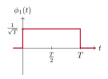
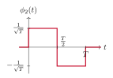
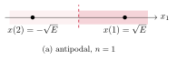
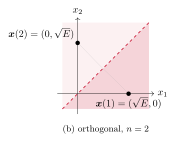
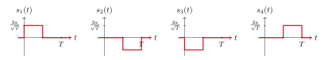
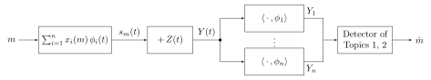

Topic 4. Continuous time
In this topic
In Topics 1 to 3 a channel use took a number x and returned a noisy number y. A real transmitter sends a waveform, a function of time, and the receiver observes that waveform corrupted by noise. This topic shows that a waveform is a vector, that a finite set of waveforms lives in a space of small dimension, and that projecting the received waveform onto that space gives back the Gaussian channel of Table 1.2 of Topic 1, one use per dimension. The results of the first half of the course for that channel then apply to waveforms without change. Sections 4.1 to 4.3 correspond to the first lecture and Sections 4.4 to 4.6 to the second.
We define the inner product, the energy and the distance of signals, and see that they obey the rules of vectors.
We represent signals in an orthonormal basis by their coordinates, and see that energies, inner products and distances are preserved.
We describe the signals of a transmitter as points of a signal space, and recover the constellations and codes of Topics 1 and 2 as sets of coordinate vectors.
We define white Gaussian noise by its projections, with variance \No/2 in every direction, and see why its energy is infinite.
We prove that the part of the noise outside the signal space is irrelevant, and obtain the discrete-time Gaussian channel with \sigma^2=\No/2.
We detect in signal space with the nearest-point rule, compute error probabilities from the distance between waveforms, and compare antipodal and orthogonal signaling.
4.1 Signals as vectors
A signal is a real function of time x(t) with finite energy, and these are the only signals we consider. In Topic 2 the sequences \x=(x_1,\ldots,x_n) were treated as vectors: we added them, we computed the squared norm \|\x\|^2=\smash{\sum_{i=1}^n}x_i^2 and the squared distance \|\y-\x\|^2, and the ML decoder of Proposition 2.3 of Topic 2 chose the nearest codeword. Signals admit the same operations, with the sum over positions replaced by an integral over time, as sums became integrals in Table 1.1 of Topic 1.
Definition 4.1.
The inner product of two signals x and y is \begin{equation*} \langle x,y\rangle=\int_{-\infty}^{\infty}x(t)\,y(t)\drm t,\tag{4.1} \end{equation*} the energy of x is \|x\|^2=\langle x,x\rangle, the norm \|x\| is the square root of the energy, and the distance between x and y is \|x-y\|.
The inner product is linear in each argument and symmetric, \langle x,y\rangle=\langle y,x\rangle. The energy of ax is a^2\|x\|^2, and the energy of a sum is \begin{equation*} \|x+y\|^2=\|x\|^2+2\langle x,y\rangle+\|y\|^2,\tag{4.2} \end{equation*} which follows from expanding the square inside the integral. The squared distance is therefore \|x-y\|^2=\|x\|^2-2\langle x,y\rangle+\|y\|^2. A time shift changes none of these quantities: x(t-\tau) has the same energy as x(t), and \langle x(\cdot-\tau),y(\cdot-\tau)\rangle=\langle x,y\rangle, because the shift is a change of variable in the integral. Exercise 4.1 shows that |\langle x,y\rangle|\leq\|x\|\,\|y\|, so the inner product of two unit-energy signals lies between -1 and 1, like the cosine of an angle.
Definition 4.2.
Two signals are orthogonal when \langle x,y\rangle=0. A set of signals \{\phi_1,\ldots,\phi_n\} is orthonormal when every signal has unit energy and any two distinct signals are orthogonal, that is, \langle\phi_i,\phi_k\rangle=1 if i=k and 0 otherwise.
Example 4.3.
Fix a duration T>0 and consider the two signals of Figure 4.1, \begin{equation*} \phi_1(t)=\begin{cases}\tfrac{1}{\sqrt T}&0\leq t<T\\0&\text{otherwise}\end{cases} \qquad\text{and}\qquad \phi_2(t)=\begin{cases}\tfrac{1}{\sqrt T}&0\leq t<\tfrac T2\\-\tfrac{1}{\sqrt T}&\tfrac T2\leq t<T\\0&\text{otherwise.}\end{cases}\tag{4.3} \end{equation*} Both have unit energy, since \phi_1^2 and \phi_2^2 equal \tfrac1T on an interval of length T. Their inner product is \begin{equation*} \langle\phi_1,\phi_2\rangle=\int_0^{T/2}\frac1T\drm t-\int_{T/2}^{T}\frac1T\drm t=\frac12-\frac12=0,\tag{4.4} \end{equation*} so \{\phi_1,\phi_2\} is an orthonormal set. The two signals overlap on the whole interval [0,T), and yet they are orthogonal: the product \phi_1\phi_2 is positive on one half and negative on the other, and the two contributions cancel. By (4.2), the signal a\phi_1+b\phi_2 has energy a^2+b^2 for any real a and b. This pair of signals is the running example of the topic.


Figure 4.1. The orthonormal set of Example 4.3. The two signals occupy the same interval and are orthogonal.
4.2 Orthonormal bases and coordinates
Given an orthonormal set \{\phi_1,\ldots,\phi_n\}, the signals that can be written as \begin{equation*} x(t)=\sum_{i=1}^n x_i\,\phi_i(t),\tag{4.5} \end{equation*} with real coordinates x_1,\ldots,x_n, form the signal space spanned by the set, and the set is an orthonormal basis of that space. Its dimension is n. The next result says that such a signal is completely described by its n coordinates, and that the vector operations of Topic 2 on the coordinates give the signal operations of Section 4.1.
Proposition 4.4.
Let x and y be two signals of the space spanned by the orthonormal basis \{\phi_1,\ldots,\phi_n\}, with coordinates \x=(x_1,\ldots,x_n) and \y=(y_1,\ldots,y_n). Then,
the coordinates are recovered by inner products, x_i=\langle x,\phi_i\rangle,
the inner product of the signals is that of the coordinate vectors, \langle x,y\rangle=\smash{\sum_{i=1}^n}x_iy_i,
the energy of the signal is \|x\|^2=\smash{\sum_{i=1}^n}x_i^2=\|\x\|^2, and
the distance between the signals is that between the vectors, \|x-y\|^2=\smash{\sum_{i=1}^n}(x_i-y_i)^2=\|\x-\y\|^2.
By the linearity of the inner product and (4.5), \langle x,\phi_i\rangle=\smash{\sum_{k=1}^n}x_k\langle\phi_k,\phi_i\rangle, and the only nonzero term of the sum is k=i, which gives x_i. For (b), we expand \langle x,y\rangle=\smash{\sum_{i=1}^n\sum_{k=1}^n}x_iy_k\langle\phi_i,\phi_k\rangle and keep the terms with i=k. Then (c) is (b) with y=x, and (d) is (c) applied to the signal x-y, whose coordinates are x_i-y_i.
Problem 4.5.
The signal x(t) equals 3 for 0\leq t<\tfrac T2, equals 1 for \tfrac T2\leq t<T and is zero otherwise. Find its coordinates in the basis of Example 4.3 and check Proposition 4.4(c).
Show solution
By Proposition 4.4(a), the coordinates are the two inner products \begin{equation*} x_1=\langle x,\phi_1\rangle=\frac{1}{\sqrt T}\Bigl(3\cdot\frac T2+1\cdot\frac T2\Bigr)=2\sqrt T \quad\text{and}\quad x_2=\langle x,\phi_2\rangle=\frac{1}{\sqrt T}\Bigl(3\cdot\frac T2-1\cdot\frac T2\Bigr)=\sqrt T,\tag{4.6} \end{equation*} and indeed 2\sqrt T\phi_1(t)+\sqrt T\phi_2(t) equals 2+1=3 on the first half and 2-1=1 on the second. The energy computed from the signal is \int_0^{T/2}9\drm t+\int_{T/2}^{T}1\drm t=5T, and from the coordinates it is x_1^2+x_2^2=4T+T=5T. The first coordinate is the average level of the signal, scaled by \sqrt T, and the second is half the jump between the two halves, scaled the same way.
A signal that is not in the space can still be compared with it. For any signal x, the signal \begin{equation*} \bar x(t)=\sum_{i=1}^n\langle x,\phi_i\rangle\,\phi_i(t)\tag{4.7} \end{equation*} is its projection onto the space, and e=x-\bar x is the error of the projection.
Proposition 4.6.
The error e is orthogonal to every signal of the space, and \|x\|^2=\|\bar x\|^2+\|e\|^2. The projection is the signal of the space nearest to x: for every signal y of the space, \|x-y\|^2=\|e\|^2+\|\bar x-y\|^2.
By construction \langle e,\phi_i\rangle=\langle x,\phi_i\rangle-\langle\bar x,\phi_i\rangle=0 for every i, by Proposition 4.4(a) applied to \bar x, so e is orthogonal to every combination of the \phi_i, in particular to \bar x and to \bar x-y. Then (4.2) with x=\bar x+e gives the first identity, and with x-y=(\bar x-y)+e the second.
Exercise 4.2 projects a ramp onto the basis of Example 4.3. In the other direction, any finite set of signals spans a space with an orthonormal basis, which Exercise 4.3 builds for two signals. The procedure, called Gram-Schmidt, starts with the first nonzero signal and normalizes it. For each remaining signal it subtracts the projection onto the span of the basis signals already obtained, discards the error if it is zero, and otherwise normalizes it to obtain the next basis signal. We use it only to know that the basis exists.
4.3 The signal space of a transmitter
A transmitter has M=2^k messages m\in\mathcal M, with prior probabilities \Pr(m), and sends the waveform s_m(t) for message m. The M waveforms span a signal space of dimension n\leq M, with an orthonormal basis \{\phi_1,\ldots,\phi_n\}, so by Proposition 4.4 each of them is \begin{equation*} s_m(t)=\sum_{i=1}^n x_i(m)\,\phi_i(t), \qquad x_i(m)=\langle s_m,\phi_i\rangle,\tag{4.8} \end{equation*} and is described by its coordinate vector \x(m)=(x_1(m),\ldots,x_n(m)). These vectors are precisely the codewords of Definition 2.1 of Topic 2, and when n=1 they are the symbols of a constellation of Topic 1. The energy of message m is E_m=\|s_m\|^2=\|\x(m)\|^2, by Proposition 4.4(c), the average energy is E=\smash{\sum_{m\in\mathcal M}}\Pr(m)E_m, and the energy per information bit is \Eb=E/k, as in Topic 2.
The transmitter is thus a bank of n multipliers and an adder, as the left part of Figure 4.4 shows: it scales each basis waveform by a coordinate and adds the results. The simplest basis is a unit-energy pulse \phi(t) supported on [0,T) and its shifts \phi_i(t)=\phi\bigl(t-(i-1)T\bigr), which are orthonormal because their supports are disjoint. Sending the symbols x_1,\ldots,x_n of Topics 1 and 2 with this basis means sending x_i\phi(t-(i-1)T) in the i-th slot of T seconds, one coordinate per slot. Topic 5 builds bases of shifted pulses whose supports overlap, as \phi_1 and \phi_2 do, and asks how little bandwidth they need.
Example 4.7.
Two messages, M=2, are sent with waveforms of the same energy E built on the basis of Example 4.3. In antipodal signaling, s_1=\sqrt E\,\phi_1 and s_2=-\sqrt E\,\phi_1: the dimension is n=1, the coordinates are x(1)=\sqrt E and x(2)=-\sqrt E, and the distance between the two waveforms is 2\sqrt E. This is the 2-PAM of Example 1.6 of Topic 1 with A=\sqrt E, now as two rectangular pulses of opposite sign. In orthogonal signaling, s_1=\sqrt E\,\phi_1 and s_2=\sqrt E\,\phi_2: the dimension is n=2, the coordinates are \x(1)=(\sqrt E,0) and \x(2)=(0,\sqrt E), and the squared distance is \|\x(1)-\x(2)\|^2=E+E=2E. Figure 4.2 shows the two configurations. At equal energy, the antipodal pair is farther apart, by a factor \sqrt2 in distance. Section 4.6 turns this factor into 3 dB.


Figure 4.2. The two binary signal sets of Example 4.7, with the decision regions of the nearest-point detector of Section 4.6. The dotted segment has length \sqrt{2E}, against 2\sqrt E in (a).
Problem 4.8.
Four equiprobable messages are sent with the waveforms s_1=a\phi_1+a\phi_2, s_2=-a\phi_1+a\phi_2, s_3=-a\phi_1-a\phi_2 and s_4=a\phi_1-a\phi_2, with a>0 and the basis of Example 4.3. Draw the four waveforms, and find the energy of each message, the energy per bit and the smallest distance between two waveforms.
Show solution
On the first half of the interval \phi_1 and \phi_2 both equal \tfrac{1}{\sqrt T}, and on the second half they have opposite signs. Hence, s_1 equals \tfrac{2a}{\sqrt T} on [0,\tfrac T2) and 0 on [\tfrac T2,T), s_2 equals 0 and then -\tfrac{2a}{\sqrt T}, s_3 equals -\tfrac{2a}{\sqrt T} and then 0, and s_4 equals 0 and then \tfrac{2a}{\sqrt T}, as in Figure 4.3. Each message is a pulse of amplitude \pm\tfrac{2a}{\sqrt T} placed in the first or in the second half: the message is carried by the position and by the sign of the pulse. By Proposition 4.4(c), every message has energy a^2+a^2=2a^2, which is also \tfrac{4a^2}{T}\cdot\tfrac T2 computed from the waveform, so E=2a^2 and, with k=2 bits, \Eb=a^2. The coordinate vectors are the four corners (\pm a,\pm a) of a square, the real version of the QPSK constellation of Problem 1.13 of Topic 1. Two neighboring corners differ in one coordinate by 2a, so the smallest squared distance is 4a^2, and the diagonal pairs are at squared distance 8a^2. In terms of the energy per bit, the minimum squared distance is 4\Eb, the same as for antipodal signaling, where d^2=4E=4\Eb. The four signals carry two bits in two dimensions at no cost in distance per bit.

Figure 4.3. The four waveforms of Problem 4.8: a pulse in the first or the second half of the interval, with either sign. Their coordinate vectors are the corners (\pm a,\pm a).
The codes of Topic 2 fit in the same picture. The parity code of Problem 2.9 of Topic 2 sends three 2-PAM symbols, so with three slots it has n=3 and its four codewords are the vertices of the cube of Figure 2.4 of that topic. The geometry that governed the comparison of codes, minimum distance at equal energy per bit, is the geometry of the signal space, and it does not depend on which orthonormal waveforms carry the coordinates.
4.4 White Gaussian noise
The channel adds to the transmitted waveform a noise waveform Z(t), which does not depend on the message, and the receiver observes Y(t)=s_m(t)+Z(t). Everything the receiver can compute from Z(t) alone is independent of m. The noise of the first half of the course was a sequence of independent Gaussian samples. Its continuous-time counterpart is defined not by its values at each instant, which we will never use, but by what the receiver can compute from it, namely inner products with signals.
Definition 4.9.
The noise Z is white Gaussian noise with power spectral density \No/2 when, for every finite collection of signals u_1,\ldots,u_J, the random variables \langle Z,u_1\rangle,\ldots,\langle Z,u_J\rangle are jointly Gaussian with zero mean, and for every pair of signals u and v, \begin{equation*} \EE\bigl(\langle Z,u\rangle\,\langle Z,v\rangle\bigr)=\frac{\No}{2}\,\langle u,v\rangle.\tag{4.9} \end{equation*}
The expressions Z(t) and \langle Z,u\rangle are formal notation for this family of Gaussian projections, not for pointwise values of an ordinary random function. The definition is the mathematical form of two physical ideas. The first is that the noise observed in one interval of time says nothing about the noise in another: two signals with disjoint supports have \langle u,v\rangle=0, so by (4.9) their projections are uncorrelated and, being jointly Gaussian, independent. The second is about intensity. Taking v=u in (4.9), the variance of \langle Z,u\rangle is \tfrac{\No}2\|u\|^2. It depends on the energy of u and on nothing else, not on its duration, its position in time or its shape, and this is what the word white means: the noise is seen with the same intensity through every unit-energy signal, as white light contains every color equally. The constant \No/2 is measured in watts per hertz, which is the same as joules, and Topic 6 relates it to the bandwidth of the receiver. With the convention of the factor \tfrac12, the noise power in a band of W hertz is \No W.
Proposition 4.10.
Let \{\phi_1,\ldots,\phi_n\} be an orthonormal set. The projections Z_i=\langle Z,\phi_i\rangle of white Gaussian noise are independent Gaussian random variables with zero mean and variance \sigma^2=\No/2.
By (4.9), \EE(Z_i^2)=\tfrac{\No}2\|\phi_i\|^2=\tfrac{\No}2 and \EE(Z_iZ_k)=\tfrac{\No}2\langle\phi_i,\phi_k\rangle=0 for i\neq k. The projections are jointly Gaussian and uncorrelated, and uncorrelated jointly Gaussian variables are independent, as seen in the probability course.
Example 4.11.
With \phi_1 of Example 4.3, the projection Z_1=\tfrac{1}{\sqrt T}\int_0^T Z(t)\drm t is the integral of the noise over the interval divided by \sqrt T, and it is Gaussian with variance \No/2 whatever the value of T. A rectangular pulse of amplitude A on the same interval has coordinate \langle A\sqrt T\phi_1,\phi_1\rangle=A\sqrt T along \phi_1. Integrating over a longer interval and dividing by \sqrt T gives the same noise variance but a coordinate that grows like \sqrt T, so the ratio of the squared coordinate to the noise variance, 2A^2T/\No, grows linearly with the duration of the pulse. Energy, not amplitude, is what buys reliability.
4.5 Irrelevance and the vector channel
The receiver observes Y(t)=s_m(t)+Z(t) and may compute any finite number of inner products of Y with signals of its choice. The natural choice is the basis of the transmitter. By (4.8) and the linearity of the inner product, the projection of the received waveform onto \phi_i is \begin{equation*} Y_i=\langle Y,\phi_i\rangle=\langle s_m,\phi_i\rangle+\langle Z,\phi_i\rangle=x_i(m)+Z_i, \qquad i=1,\ldots,n,\tag{4.10} \end{equation*} the coordinate of the transmitted waveform plus the projection of the noise. The right part of Figure 4.4 shows the n correlators that compute them. The question is whether anything is lost by keeping only these n numbers out of a whole waveform. The following theorem says that nothing is.

Figure 4.4. Transmission of waveforms in signal space. The transmitter combines the basis waveforms with the coordinates of the message, and the receiver recovers the noisy coordinates with a bank of correlators and decides as in Topics 1 and 2.
Theorem 4.12.
[Irrelevance]
Let \psi_1,\ldots,\psi_J be orthonormal signals, each orthogonal to \phi_1,\ldots,\phi_n, and let V_j=\langle Y,\psi_j\rangle. The random variables V_1,\ldots,V_J do not depend on the message and are independent of Z_1,\ldots,Z_n. Consequently, the MAP decision based on (Y_1,\ldots,Y_n,V_1,\ldots,V_J) is the MAP decision based on (Y_1,\ldots,Y_n) alone.
By (4.8), \langle s_m,\psi_j\rangle=\smash{\sum_{i=1}^n}x_i(m)\langle\phi_i,\psi_j\rangle=0, so V_j=\langle Z,\psi_j\rangle is a projection of the noise alone and does not depend on m. By (4.9), \EE(V_jZ_i)=\tfrac{\No}2\langle\psi_j,\phi_i\rangle=0, and jointly Gaussian uncorrelated variables are independent, so the vector \boldsymbol V=(V_1,\ldots,V_J) is independent of (Z_1,\ldots,Z_n), and therefore of \Y=(Y_1,\ldots,Y_n) given m. By Proposition 4.10 applied to the orthonormal set \{\psi_j\}, the V_j are independent Gaussians of variance \No/2, so \boldsymbol V has a density f. The joint density of the observation given m is then a product W(\y|\x(m))\,f(\boldsymbol v), where f does not depend on m. The MAP decoder of Theorem 2.2 of Topic 2 maximizes \Pr(m)\,W(\y|\x(m))\,f(\boldsymbol v) over m, and the factor f(\boldsymbol v) is common to all messages and does not affect the maximization.
Any signal \psi is the sum of its projection onto the signal space and an error orthogonal to it, by Proposition 4.6. If the error is nonzero, \langle Y,\psi\rangle is a combination of Y_1,\ldots,Y_n and of the projection onto the normalized error, a variable V covered by the theorem. If the error is zero, the observation is already a combination of Y_1,\ldots,Y_n. The n correlator outputs are therefore all that the optimal receiver needs. Together with Proposition 4.10, equation (4.10) says that \begin{equation*} \Y=\x(m)+\boldsymbol Z, \qquad Z_1,\ldots,Z_n\ \text{independent, Gaussian, of variance }\sigma^2=\frac{\No}{2}.\tag{4.11} \end{equation*} This is the real Gaussian channel of Table 1.2 of Topic 1, used n times, once per dimension of the signal space, and memoryless because the noise projections are independent. A channel use, the abstract unit of the first three topics, is one orthonormal direction of the signal space. Table 4.1 collects the correspondence. In particular, for a transmitter with equal-energy waveforms, the energy per channel use is \Es=E/n and the signal-to-noise ratio of Topic 1 reads \begin{equation*} \snr=\frac{\Es}{\sigma^2}=\frac{2\Es}{\No}.\tag{4.12} \end{equation*}
| Topics 1 to 3 | This topic |
|---|---|
| Channel use | One orthonormal waveform \phi_i, one dimension of the signal space |
| Symbol x_i, codeword \x(m) | Coordinate x_i(m)=\langle s_m,\phi_i\rangle, waveform s_m(t) |
| Received symbol y_i | Correlator output Y_i=\langle Y,\phi_i\rangle |
| Noise sample of variance \sigma^2 | Noise projection \langle Z,\phi_i\rangle of variance \No/2 |
| Squared distance \|\x(m)-\x(m')\|^2 | Squared distance between waveforms, \|s_m-s_{m'}\|^2=\|\x(m)-\x(m')\|^2 |
| Energy \Es per channel use, \snr=\Es/\sigma^2 | Energy E/n per dimension, \snr=2\Es/\No |
Table 4.1. The dictionary between the discrete-time channel of Topics 1 to 3 and the waveform channel.
4.6 Detection in signal space
With (4.11), the results of Topics 1 and 2 apply to waveforms at once. The MAP decoder is optimal by Theorem 2.2 of Topic 2 and, for equiprobable messages, it is the ML decoder, which by Proposition 2.3(a) of that topic chooses the coordinate vector nearest to \Y. By Proposition 4.4(d), this is the waveform s_m nearest to the projection \sum_{i=1}^nY_i\phi_i(t) of the received waveform onto the signal space. The decision regions are the Voronoi regions of the points \x(m), as in Section 1.5 of Topic 1 and in Figure 4.2. The rule can also be written without the basis.
Proposition 4.13.
The ML decoder is \begin{equation*} \hat m=\argmin_{m\in\mathcal M}\|\Y-\x(m)\|^2=\argmax_{m\in\mathcal M}\Bigl(\langle Y,s_m\rangle-\frac{E_m}{2}\Bigr),\tag{4.13} \end{equation*} and when all the waveforms have the same energy it chooses the waveform most correlated with the received one. For equiprobable messages, this is also the MAP decoder.
Expanding the square, \|\Y-\x(m)\|^2=\|\Y\|^2-2\smash{\sum_{i=1}^n}Y_ix_i(m)+\|\x(m)\|^2. The first term does not depend on m, the last one is E_m, and by (4.8) and linearity \smash{\sum_{i=1}^n}x_i(m)\langle Y,\phi_i\rangle=\langle Y,s_m\rangle. Minimizing the distance is thus maximizing \langle Y,s_m\rangle-E_m/2, and the energy term drops out when it is the same for all messages.
The receiver may thus correlate the received waveform with the M candidate waveforms instead of the n basis waveforms. The two implementations give the same decision. Topic 5 shows that a correlation can be computed by filtering and sampling, which is how receivers are built.
For error probabilities we need no new computation either. For two messages at distance d=\|\x(1)-\x(2)\|=\|s_1-s_2\|, the ML decoder finds the second more likely than the first with probability \tfrac12\erfc\bigl(d/(2\sqrt2\,\sigma)\bigr), by Exercise 2.7 of Topic 2, and for M=2 this is exactly the error probability. With \sigma^2=\No/2, we have 2\sqrt2\,\sigma=2\sqrt{\No} and \begin{equation*} P_{\rm e}=\tfrac12\erfc\biggl(\frac{d}{2\sqrt{\No}}\biggr).\tag{4.14} \end{equation*} The error probability of binary signaling in white noise depends on the two waveforms only through their distance.
Example 4.14.
For the two signal sets of Example 4.7, equation (4.14) gives, with d=2\sqrt E and d=\sqrt{2E}, \begin{equation*} P_{\rm e}^{\rm antipodal}=\tfrac12\erfc\biggl(\sqrt{\frac{E}{\No}}\biggr) \qquad\text{and}\qquad P_{\rm e}^{\rm orthogonal}=\tfrac12\erfc\biggl(\sqrt{\frac{E}{2\No}}\biggr).\tag{4.15} \end{equation*} Orthogonal signaling needs twice the energy of antipodal signaling, that is, 3 dB more, for the same error probability. This is the factor \sqrt2 in distance of Example 4.7, squared. Since each message carries one bit, E=\Eb in both cases. As a check, antipodal signaling is 2-PAM with A=\sqrt E on a channel of variance \No/2, so \snr=2E/\No by (4.12), and equation (1.22) of Topic 1 gives \tfrac12\erfc(\sqrt{\snr/2})=\tfrac12\erfc(\sqrt{E/\No}), the same value. Table 4.2 summarizes the comparison.
Problem 4.15.
Find the decision regions and the error probability of the ML decoder for the four waveforms of Problem 4.8, and compare with antipodal signaling at the same energy per bit.
Show solution
The coordinate vectors are the corners (\pm a,\pm a) and the nearest-point regions are the four quadrants of the plane (Y_1,Y_2), as for the QPSK of Problem 1.13 of Topic 1. When s_1 is sent, \Y=(a+Z_1,a+Z_2) stays in the first quadrant when Z_1>-a and Z_2>-a. The two conditions concern independent Gaussians of variance \No/2, so by the product rule and equation (1.23) of Topic 1 with \sigma^2=\No/2, \begin{equation*} \Pr(\text{correct}\,|\,m=1)=(1-p)^2, \qquad p=\Pr(Z_1<-a)=\tfrac12\erfc\biggl(\frac{a}{\sqrt{\No}}\biggr),\tag{4.16} \end{equation*} and P_{\rm e}(1)=1-(1-p)^2=2p-p^2. By symmetry this is the error probability of every message, and hence the average. Since \Eb=a^2 by Problem 4.8, p=\tfrac12\erfc\bigl(\sqrt{\Eb/\No}\bigr). If the two bits of each message are assigned to the signs of the two coordinates, each bit is decided from its own coordinate and is wrong with probability p exactly, as in Exercise 1.5 of Topic 1, so the bit error probability is P_{\rm b}=p=\tfrac12\erfc\bigl(\sqrt{\Eb/\No}\bigr), the same as for antipodal signaling in (4.15). The four waveforms are two independent antipodal transmissions, one per dimension, and cost the same energy per bit as one. The comparison with 4-PAM in one dimension, Problem 1.12 of Topic 1, is instructive: 4-PAM needs five times the symbol energy of 2-PAM for about the same error probability, which is 7 dB per symbol and, since each of its symbols carries two bits, about 4 dB per bit, whereas a second dimension carries the second bit at no cost per bit. Dimensions are a resource, and Topic 6 says what they cost in bandwidth.
| Signal set | n | bits | E | d_{\min}^2/\Eb | P_{\rm e} |
|---|---|---|---|---|---|
| Antipodal, \pm\sqrt E\,\phi_1 | 1 | 1 | \Eb | 4 | \tfrac12\erfc\bigl(\sqrt{\Eb/\No}\bigr) |
| Orthogonal, \sqrt E\,\phi_1 and \sqrt E\,\phi_2 | 2 | 1 | \Eb | 2 | \tfrac12\erfc\bigl(\sqrt{\Eb/(2\No)}\bigr) |
| Four corners (\pm a,\pm a) | 2 | 2 | 2\Eb | 4 | 2p-p^2, p=\tfrac12\erfc\bigl(\sqrt{\Eb/\No}\bigr) |
Table 4.2. The three signal sets of this section on the basis of Example 4.3, at the same energy per bit.
What to remember
Signals are vectors: \langle x,y\rangle=\int x(t)y(t)\drm t is their inner product, \|x\|^2=\langle x,x\rangle their energy and \|x-y\| their distance. Orthogonal signals have zero inner product and need not have disjoint supports.
In an orthonormal basis, a signal of the spanned space is its coordinates x_i=\langle x,\phi_i\rangle, and inner products, energies and distances of signals are those of the coordinate vectors. The projection \bar x=\sum_i\langle x,\phi_i\rangle\phi_i is the nearest signal of the space, with an orthogonal error.
The M waveforms of a transmitter span a space of dimension n\leq M. Their coordinate vectors \x(m) are the codewords of Topic 2, and a channel use is one dimension.
White Gaussian noise of spectral density \No/2 has, in every orthonormal direction, an independent Gaussian projection of variance \No/2, and infinite energy. The projections outside the signal space are irrelevant to the optimal decision.
Correlating the received waveform with the basis gives \Y=\x(m)+\boldsymbol Z, the real Gaussian channel of Topic 1 with \sigma^2=\No/2, used n times. The results of Topics 1 to 3 for that channel apply, with \snr=2\Es/\No.
In binary signaling under ML detection, two waveforms at distance d are confused with probability \tfrac12\erfc\bigl(d/(2\sqrt{\No})\bigr). Antipodal signaling gives \tfrac12\erfc(\sqrt{\Eb/\No}) and orthogonal signaling needs 3 dB more. A second dimension carries a second bit at the same energy per bit.